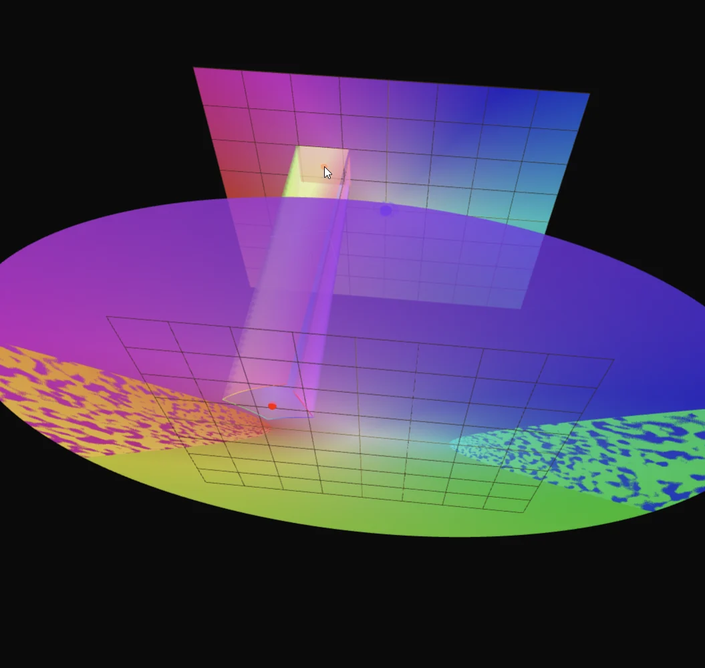

Complex functions
Connect a region in the complex plane to its image under a function, then inspect stretching, folding and branches from different viewpoints. The experiment is in making that correspondence visible and interactive.
Explore connections
Open the application, then follow what changes
See a complex function as geometry: how it moves a region, changes local scale and wraps around singularities. Branch structure and Riemann surfaces give a visible vocabulary for contour integration, phase and multivalued functions.
-
01
Choose a domain
Select a complex function and a region to inspect.
-
02
Map the region
Follow how points and geometric structure transform.
-
03
Inspect local change
Relate deformation and phase to the function's behavior nearby.
-
04
Follow the branches
Explore continuation and the geometry surrounding singular behavior.
Make the mapping visible
The mathematics is approachable; the presentation is the experiment. I wanted to connect a patch of the domain directly to the region it becomes, and let the viewer walk around that correspondence. This is my own visual treatment of standard complex-function ideas, without claiming a new mathematical method.
A complex function transforms a two-dimensional input into a two-dimensional output. This study makes that correspondence spatial: separate domain and image planes show where a hovered region goes, with connecting geometry tracing the transformation. Circles, squares and triangles provide recognizable shapes for comparing local stretching, rotation and folding.
The selectable functions include powers, roots, the reciprocal, exponential, logarithm, trigonometric functions and the Joukowsky map. Changing the function keeps the same interaction vocabulary, so the geometry of each transformation becomes the main difference to inspect.
Inspect branches and local change
For square roots and cube roots, the application evaluates each branch explicitly. Multiple output planes and sampled surfaces reveal the different values associated with one input. Surface height can represent the real or imaginary component, while phase provides a consistent color cue.
A second view estimates the derivative numerically and displays its magnitude as a displaced mesh. Switching between the function and its derivative connects the global mapping to local behavior. The implementation separates complex arithmetic, branch evaluation, sampled geometry and pointer interaction within a Three.js scene.
Explore singular behavior
Optional markers search for candidate zeros and poles of both the function and its derivative. The detector combines a coarse grid, magnitude thresholds, nearby samples and limited refinement. Search-radius controls make the inspected region explicit. Start with the reciprocal or a root, move a highlighted shape toward the origin, then compare the image with the derivative landscape: the same neighborhood tells several different parts of the story.
More recorded views · 2
Current scope
- Derivatives and singularity markers use finite sampling and thresholds; they are visual diagnostics, not certified root isolation or reliable multiplicity estimates near singularities.
- Surfaces sample a finite domain. The logarithm displays three selected branches, rather than its infinitely many sheets or a general analytic-continuation system.